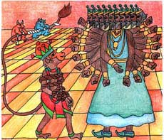
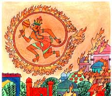

<html>
<!-- Mirrored from www.damodara.de/espaniol/html/jiva_tattva/Hanuman/Hanuman_10.htm by HTTrack Website Copier/3.x [XR&CO'2013], Sun, 23 Feb 2014 09:48:20 GMT -->
<head>
<title>La cola magica!!!</title>
<meta http-equiv="Content-Type" content="text/html; charset=iso-8859-1">
</head>

<body bgcolor="#FFFFFF" text="#000000">
<table width="45%" border="0" cellspacing="15" cellpadding="0" align="center" bordercolor="#FFFFFF" bgcolor="#FFFFFF" height="1170">
  <tr> 
    <td width="419" height="232" valign="top"> 
      <blockquote>
        <div align="center"> 
          <p align="center"><font face="Comic Sans MS"><o:p></o:p><font color="#FF6633" size="4">&iexcl;FUEGO!</font></font></p>
          <p><font face="Comic Sans MS" size="3">Hanuman tuvo una brillante idea. 
            Talvez deba hablar con Ravana frente a frente -pens&oacute;-<br>
            Y haci&eacute;ndose nuevamente peque&ntilde;o, se dej&oacute; capturar 
            por los guardias, para as&iacute; ser llevado donde Ravana.</font></p>
          <p><font face="Comic Sans MS" size="3">Por favor libera a Sita -le rog&oacute; 
            Hanuman- <br>
            &iexcl;Nunca! -gru&ntilde;&oacute; Ravana- &iexcl;Eres un atrevido! 
            &iexcl;Qu&eacute;menle la cola!</font></p>
          <p><font face="Comic Sans MS" size="3">Varios demonios, agarraron la 
            cola de Hanuman para atarla, pero de pronto su cola empez&oacute; 
            a crecer&#133; y crecer, larga, cada vez m&aacute;s larga! </font></p>
          <p><font face="Comic Sans MS" size="3">&iexcl;Tontos! -grit&oacute; 
            Ravana- &iexcl;Es un truco! &iexcl;Atrapen su cola y mant&eacute;nganla 
            firme!</font></p>
          <p><font face="Comic Sans MS" size="3">Finalmente, los guardias se las 
            ingeniaron para colocar la punta de la cola de Hanuman en el fuego, 
            pero el fuego no pod&iacute;a hacerle da&ntilde;o, porque sus poderes 
            m&aacute;gicos lo manten&iacute;an perfectamente fresco. </font></p>
        </div>
      </blockquote>
    </td>
  </tr>
  <tr> 
    <td valign="top" height="185"> 
      <div align="center"> 
        <p><a href="../../../images/galeria/colores/radha%20m%20gopal/index.html"></a></p>
        <p><font face="Comic Sans MS" color="#000000" size="2"><b>Hanuman en la 
          corte de Ravana</b></font></p>
      </div>
    </td>
  </tr>
  <tr> 
    <td height="408" valign="top"> 
      <blockquote> 
        <div align="center"> 
          <p><font size="3" face="Comic Sans MS">De pronto, Hanuman tuvo otra 
            grandiosa idea.</font></p>
          <p><font size="3" face="Comic Sans MS">Lo tengo -pens&oacute;- &iexcl;puedo 
            poner mi cola encendida con fuego, en buen uso!</font></p>
          <p><font size="3" face="Comic Sans MS">Y entonces, empez&oacute; a crecer 
            nuevamente grande, muy grande, rompiendo las sogas que lo ataban. 
            Con un s&oacute;lo impulso, brinco por los aires, &iexcl;su cola encendida 
            brillaba y se ve&iacute;a como una enorme bola de fuego!, y volando 
            encima de la ciudad de Lanka, prendi&oacute; fuego en todos los techos 
            de las casas. </font></p>
          <p><font size="3" face="Comic Sans MS">&iexcl;Oh, c&oacute;mo odio a 
            ese mono! -grit&oacute; Ravana-</font></p>
          <p><font size="3" face="Comic Sans MS">Y empez&oacute; a agitar sus 
            veinte brazos con una ira salvaje, mientras tanto Hanuman sumerg&iacute;a 
            su cola en el mar para apagarla.</font></p>
          <p><font size="3" face="Comic Sans MS">Sssssssss&#133;.</font></p>
        </div>
      </blockquote>
 
   </td>
  </tr>
  <tr> 
    <td height="92" valign="top"> 
      <div align="center"> </div>
      <div align="center"> 
        <p><a href="../../../images/galeria/colores/radha%20m%20gopal/index.html"></a></p>
        <p><font face="Comic Sans MS" size="2"><b>Hanuman quemando los techos 
          de las casas</b></font></p>
      </div>
    </td>
  </tr>
  <tr> 
    <td height="45" valign="top" bgcolor="#FFFFFF"> 
      <div align="center"><font face="Comic Sans MS"><a href="Hanuman_09.html"></a><a href="Hanuman.html"></a> 
        <a href="Hanuman_11.html"></a></font></div>
    </td>
  </tr>
</table>
<p>&nbsp;</p>
<p>&nbsp;</p>
</body>
<!-- Mirrored from www.damodara.de/espaniol/html/jiva_tattva/Hanuman/Hanuman_10.htm by HTTrack Website Copier/3.x [XR&CO'2013], Sun, 23 Feb 2014 09:48:24 GMT -->
</html>
